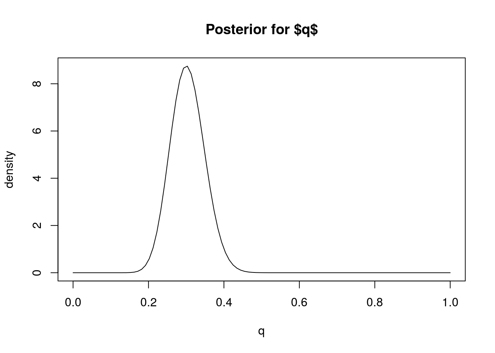

Last updated: 2017-03-06
Code version: c7339fc
This vignette illustrates how to summarize and interpret a posterior distribution that has been computed analytically.
You should be familiar with simple analytic calculations of the posterior distribution of a parameter, such as for a binomial proportion.
Suppose we have a parameter \(q\), whose posterior distribution we have computed to be Beta(31, 71) (as here for example). What does this mean? What statements can we make about \(q\)? How do we obtain interval estimates and point estimates for \(q\)?
Remember that the posterior distribution represents our uncertainty (or certainty) in \(q\), after combining the information in the data (the likelihood) with what we knew before collecting data (the prior).
To get some intuition, we could plot the posterior distribution so we can see what it looks like.
q = seq(0,1,length=100)
plot(q, dbeta(q, 31,71), main="Posterior for $q$", ylab="density", type="l")
Based on this plot we can visually see that this posterior distribution has the property that \(q\) is highly likely to be less than 0.4 (say) because most of the mass of the distribution lies below 0.4. In Bayesian inference we quantify statements like this – that a particular event is “highly likely” – by computing the “posterior probability” of the event, which is the probability of the event under the posterior distribution.
For example, in this case we can compute the (posterior) probability that \(q<0.4\), or \(\Pr(q <0.4 | D)\). Since we know the posterior distribution is a Be(31,71) distribution, this probability is easy to compute using the pbeta function:
pbeta(0.4,31,71)[1] 0.9792202So we would say “The posterior probability that \(q<0.4\) is 0.98”.
We can extend this idea to assess the certainty (or confidence) that \(q\) lies in any interval. For example, from the plot it looks like \(q\) will very likely lie in the interval [0.2,0.4] because most of the posterior distribution mass lies between these two numbers. To quantify how likely we compute the (posterior) probability that \(q\) lies in the interval \([0.2,0.4]\), \(\Pr(q \in [0.2,0.4] | D)\). Again, this can be computed using the pbeta function:
pbeta(0.4,31,71) - pbeta(0.2,31,71)[1] 0.9721229Thus, based on our prior and the data, we would be highly confident (probability approximately 97%) that \(q\) lies between 0.2 and 0.4. That is, \([0.2,0.4]\) is a 97% Bayesian Confidence Interval for \(q\). (Bayesian Confidence Intervals are often referred to as “Credible Intervals”, and also often abbreviated to CI.)
In practice, it is more common to compute Bayesian Confidence Intervals the other way around: specify the level of confidence we want to achieve and find an interval that achieves that level of confidence. This can be done by computing the quantiles of the posterior distribution. For example, the 0.05 and 0.95 quantiles of the posterior would define a 90% Bayesian Confidence Interval.
In our example, these quantiles of the Beta distribution can be computed using the qbeta function, like this:
qbeta(0.05,31,71)[1] 0.2315858qbeta(0.95,31,71)[1] 0.38065So [0.23, 0.38] is a 90% Bayesian Confidence Interval for \(q\). (It is 90% because there is a 5% chance of it being above 0.23 and 5% of it being above 0.38).
In some cases we might be happy to give our “best guess” for \(q\), rather than worrying about our uncertainty. That is, we might be interested in giving a “point estimate” for \(q\). Essentially this boils down to summarizing the posterior distribution by a single number.
When \(q\) is a continuous-valued variable, as here, the most common Bayesian point estimate is the mean (or expectation) of the posterior distribution, which is called the “posterior mean”. The mean of the Beta(31,71) distribution is 31/(31+71) = 0.3. So we would say “The posterior mean for \(q\) is 0.3.”
An alternative to the mean is the median. The median of the Beta(31,71) distribution can be found using qbeta:
qbeta(0.5, 31,71)[1] 0.3026356So we would say “The posterior median for \(q\) is 0.3”.
The mode of the posterior (“posterior mode”) is another possible summary, although this perhaps makes more sense in settings where \(q\) is a discrete variable rather than a continuous variable as here.
The most common summaries of a posterior distribution are interval estimates and point estimates.
Interval estimates can be obtained by computing quantiles of the posterior distribution. Bayesian Confidence intervals are often called “Credible Intervals”.
Point estimates are typically obtained by computing the mean or median (or mode) of the posterior distribution. These are called the “posterior mean” or the “posterior median” (or “posterior mode”).
Suppose you are interested in a parameter \(\theta\) and obtain a posterior distribution for \(\theta\) to be normal with mean 0.2 and standard deviation 0.4. Find
sessionInfo()R version 3.3.2 (2016-10-31)
Platform: x86_64-pc-linux-gnu (64-bit)
Running under: Ubuntu 14.04.5 LTS
locale:
[1] LC_CTYPE=en_US.UTF-8 LC_NUMERIC=C
[3] LC_TIME=en_US.UTF-8 LC_COLLATE=en_US.UTF-8
[5] LC_MONETARY=en_US.UTF-8 LC_MESSAGES=en_US.UTF-8
[7] LC_PAPER=en_US.UTF-8 LC_NAME=C
[9] LC_ADDRESS=C LC_TELEPHONE=C
[11] LC_MEASUREMENT=en_US.UTF-8 LC_IDENTIFICATION=C
attached base packages:
[1] stats graphics grDevices utils datasets methods base
other attached packages:
[1] knitr_1.15.1 MASS_7.3-45 expm_0.999-0
[4] Matrix_1.2-8 workflowr_0.4.0 rmarkdown_1.3.9004
loaded via a namespace (and not attached):
[1] Rcpp_0.12.9 lattice_0.20-34 gtools_3.5.0 digest_0.6.12
[5] rprojroot_1.2 mime_0.5 R6_2.2.0 grid_3.3.2
[9] xtable_1.8-2 backports_1.0.5 git2r_0.18.0 magrittr_1.5
[13] evaluate_0.10 stringi_1.1.2 tools_3.3.2 stringr_1.2.0
[17] shiny_1.0.0 httpuv_1.3.3 yaml_2.1.14 htmltools_0.3.5This site was created with R Markdown